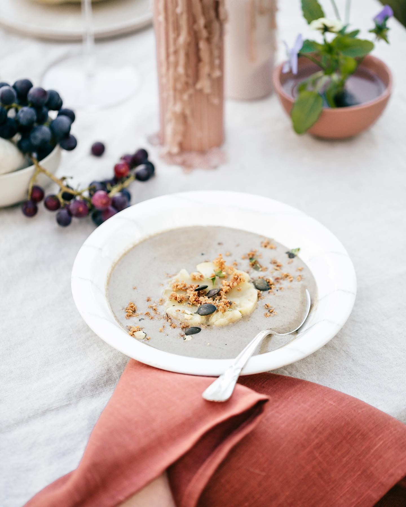

Hubová polievka podľa @nataliajablonkova — Normy Jedál
Dnes som varila tento hríbový krém a hneď som si spomenula na naše jesenné session s @atelier_jarabina. Už nech je jar a môžeme sa pustiť do nových krásností. Tento rok som myslím piekla iba raz. Ale je naozaj veľká šanca, že zajtra niečo pripravím a že sa to tu ocitne. Držme si palce🤞🏻✌🏻😅 #editorial #hubovapolievka #cooking #foodphotography